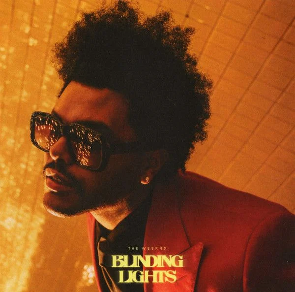
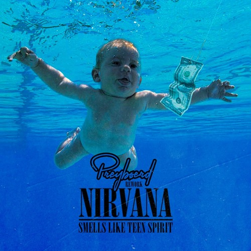
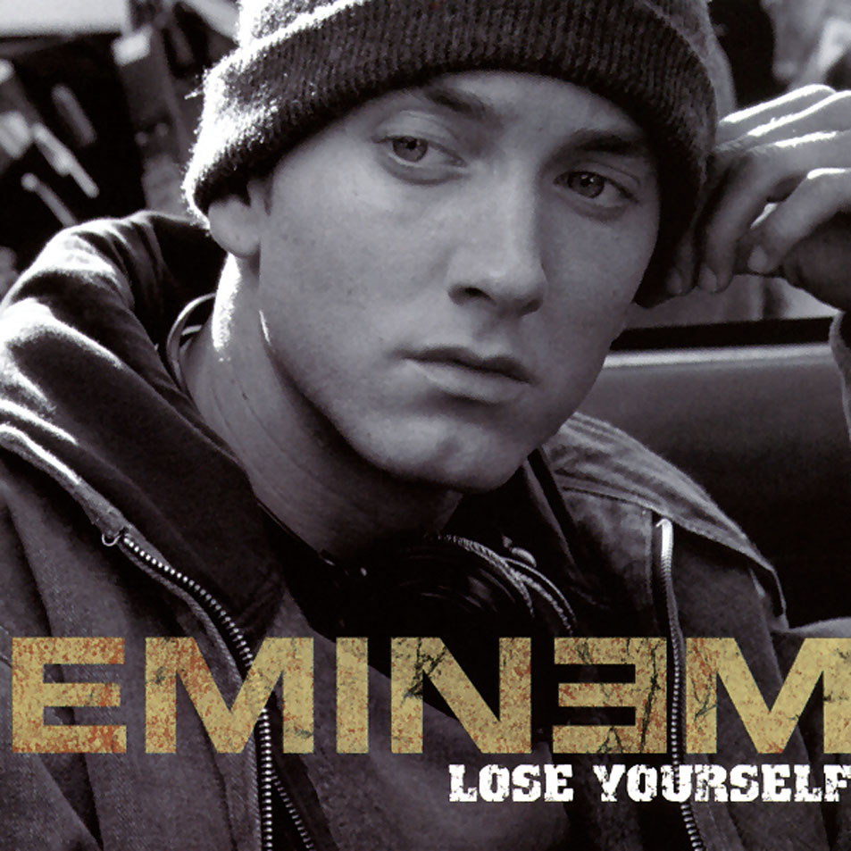
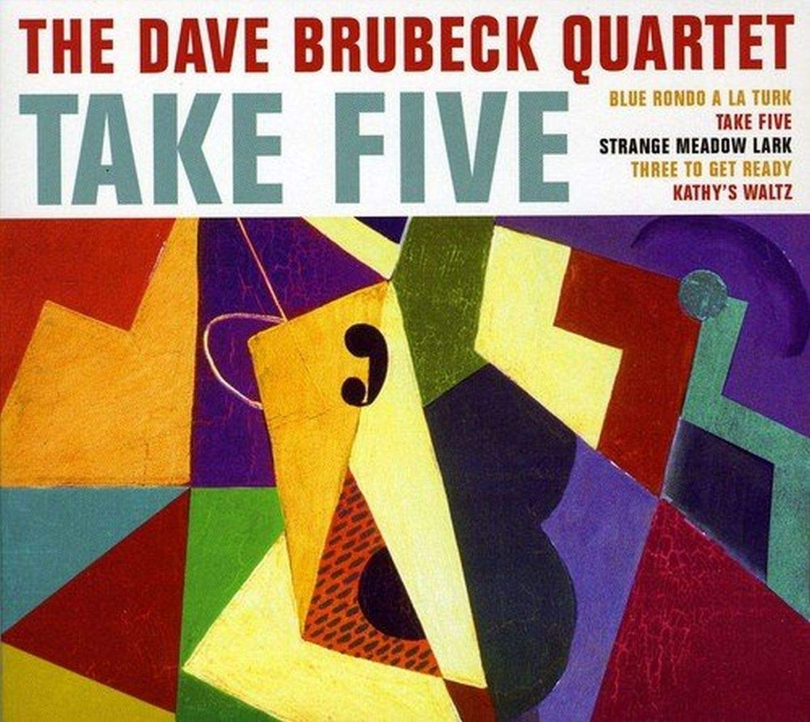
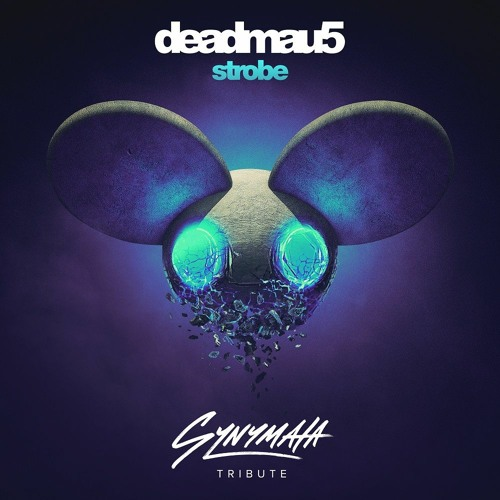
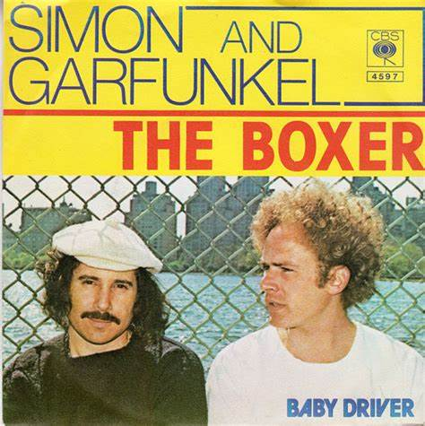
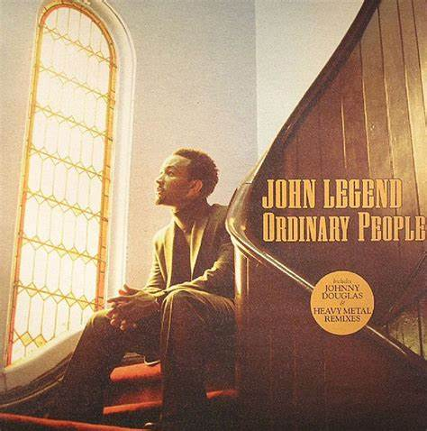
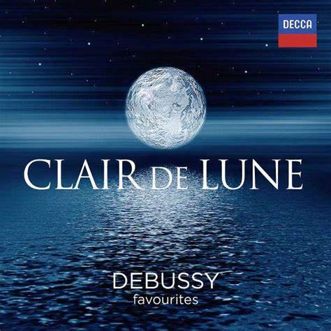

» Zoznam skladieb
-

Blinding Lights - The Weeknd
Retro synth-pop hit, ktorý dominoval rebríčkom v roku 2020.
-

Smells Like Teen Spirit - Nirvana
Grungeová hymna 90. rokov, ikonický hit od Nirvany.
-

Lose Yourself - Eminem
Motivačný rap z filmu 8 Mile, za ktorý Eminem získal Oscara.
-

Take Five - Dave Brubeck
Jedna z najznámejších jazzových skladieb v 5/4 takte.
-

Strobe - Deadmau5
Melancholická elektronická skladba s atmosférickým vývojom.
-

The Boxer - Simon & Garfunkel
Introspektívna folková balada s bohatým zvukovým aranžmánom.
-

Ordinary People - John Legend
Klasické R&B piano s emóciami a silným vokálom.
-

Clair de Lune - Claude Debussy
Jemná a ikonická impresionistická klavírna skladba.